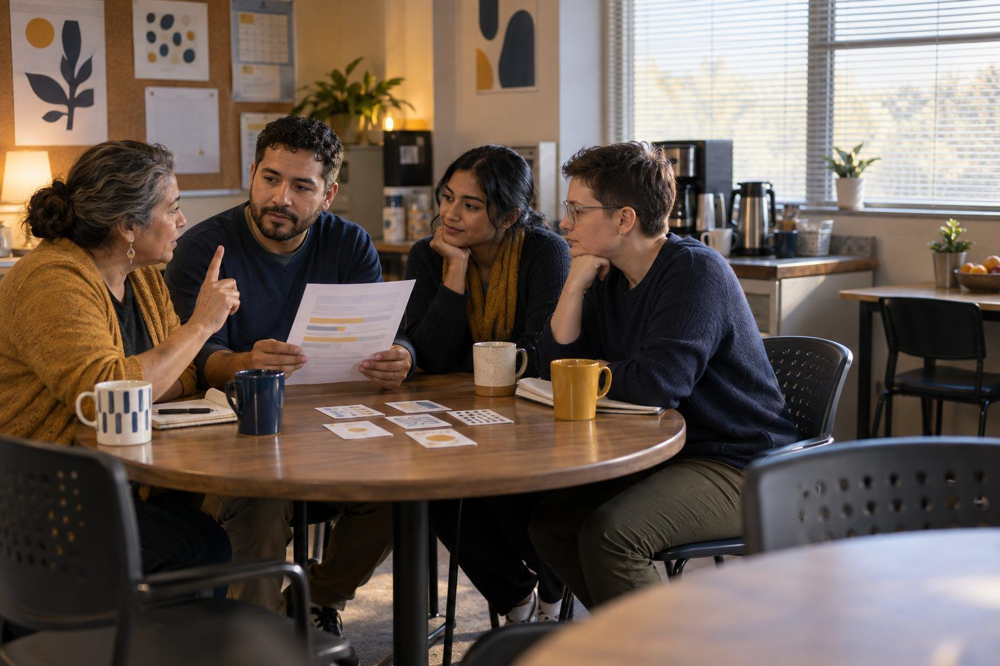

Bồi dưỡng chuyên môn · Chuyên viên hỗ trợ, Thủ thư, Lãnh đạo · 90 phút
Thiết kế câu lạc bộ đọc nghiên cứu
Chuyên viên hỗ trợ giảng dạy trải nghiệm một câu lạc bộ đọc nghiên cứu với tư cách người học, đọc một bài viết thực hành bằng con mắt hoài nghi, rồi thiết kế chuỗi bồi dưỡng chuyên môn của riêng mình dựa trên nhu cầu thực tế của giáo viên và các nguyên tắc học tập của người lớn.
Câu lạc bộ đọc nghiên cứu là một trong những cách đơn giản nhất để giữ cho đội ngũ nhân viên gắn kết với nghiên cứu, nhưng cũng là một trong những hoạt động dễ bị tổ chức kém nhất: một bài viết không ai chọn, một bản tóm tắt không ai cần, và chẳng có gì thay đổi vào sáng thứ Hai. Trước tiên, chuyên viên hỗ trợ giảng dạy tham gia một câu lạc bộ đọc về một bài viết thực hành hư cấu nói về việc dạy học sinh dừng lại trước khi chia sẻ trên mạng, luyện tập chính kỹ năng kiểm chứng tuyên bố mà họ muốn giáo viên dạy. Sau đó họ lùi lại, gọi tên các nguyên tắc học tập của người lớn đã khiến buổi đó thành công hay thất bại, đọc một bộ hồ sơ nhu cầu của giáo viên, và thiết kế một chuỗi câu lạc bộ đọc dựa trên những gì giáo viên của họ thực sự cần.
Trong bộ tài liệu này
- Phiếu A: Bài viết thực hành: "Dừng lại trước khi đăng" (bài đọc)
- Phiếu B: Thẻ nguyên tắc và thẻ hồ sơ giáo viên (thẻ cắt rời)
- Phiếu C: Phiếu lên kế hoạch chuỗi câu lạc bộ đọc (phiếu bài tập)
- Đáp án cho người điều phối (trang cuối)
Chỉ báo ELE của TCEA
- C4.1 Tôi biết cách thiết kế và thực hiện các buổi bồi dưỡng chuyên môn hiệu quả.
- C4.2 Tôi có thể xác định và đáp ứng nhu cầu học tập riêng của từng giáo viên.
- C4.3 Tôi nhận thức được các nguyên tắc học tập của người lớn và cách áp dụng chúng.
- C1.3 Tôi nhận thức được các nghiên cứu giáo dục và thực hành tốt nhất mới nhất.
Hướng dẫn đầy đủ cho người điều phối: mglearn.github.io/eles/vi/activities/journal-club-by-design.html
Phiếu A cho Thiết kế câu lạc bộ đọc nghiên cứu
Bài viết thực hành: "Dừng lại trước khi đăng"
Bài viết này là hư cấu và được viết cho hoạt động này. Trường học, tác giả, công ty và mọi con số đều là bịa. Hãy đọc nó theo cách bạn muốn giáo viên đọc bất kỳ bài viết giáo dục nào.
1Dừng lại trước khi đăng: Trường trung học cơ sở của chúng tôi đã giảm một nửa việc chia sẻ thông tin sai lệch như thế nào. Tác giả: một chuyên viên hỗ trợ giảng dạy hư cấu tại Juniper Ridge Middle School, học khu Alder Springs ISD. Đăng trên The Riverbend Educator, một bản tin khu vực hư cấu. Mục quảng cáo bên cạnh: "Chặn thông tin sai lệch trước khi nó lan truyền với VeriCheck AI."
2Mùa thu năm ngoái, tổ giáo viên lớp 7 của chúng tôi nhận thấy học sinh chuyển tiếp tin đồn trong các nhóm chat của lớp: một ngày nghỉ vì tuyết giả, một chuyến thăm của người nổi tiếng bịa đặt, một bức ảnh căng tin bị chỉnh sửa. Chúng tôi quyết định dạy một thói quen duy nhất trong sáu tuần: Dừng lại, Hỏi, Kiểm tra. Trước khi chia sẻ bất cứ điều gì, học sinh dừng lại, hỏi "Ai tạo ra cái này và tại sao?", và kiểm tra xem có nguồn đáng tin cậy nào đưa tin tương tự không.
3Mỗi thứ Hai, giáo viên làm mẫu thói quen này trong mười phút bằng một bài đăng có thật trong tuần, đã xóa tên. Học sinh luyện tập theo cặp và giữ một tấm thẻ nhỏ ghi ba bước trong sổ kế hoạch. Giáo viên kể rằng học sinh bắt đầu nói "dừng lại" với nhau trong lớp, và đó là khoảnh khắc chúng tôi yêu thích nhất trong cả dự án.
4Vào đầu và cuối sáu tuần, chúng tôi hỏi học sinh một câu khảo sát: "Trong tuần vừa qua, bạn đã chia sẻ điều gì đó trên mạng trước khi kiểm tra xem nó có đúng không bao nhiêu lần?" Câu trả lời trung bình giảm từ khoảng 4 lần xuống khoảng 2 lần. Chúng tôi tin chắc rằng Dừng lại, Hỏi, Kiểm tra đã giảm một nửa việc chia sẻ thông tin sai lệch.
5Trong cùng sáu tuần đó, trường chúng tôi cũng áp dụng VeriCheck AI, cho phép học sinh dán một tuyên bố vào và nhận ngay đánh giá "đúng" hoặc "sai". Nhiều học sinh cho biết các em dùng nó làm bước Kiểm tra. Như một học sinh nói: "Nếu VeriCheck bảo là đúng thì em biết là mình chia sẻ được."
6Chúng tôi khuyến nghị mọi trường trung học cơ sở áp dụng Dừng lại, Hỏi, Kiểm tra, lý tưởng nhất là cùng với VeriCheck AI. Kết quả của chúng tôi đã tự nói lên tất cả.
7Câu hỏi cho câu lạc bộ đọc của bạn. Bài viết khẳng định điều gì? Làm sao các tác giả biết? Bạn sẽ kiểm tra gì bên ngoài bài viết? Có một điều gì đáng thử, và bạn cần thấy gì để tin rằng nó hiệu quả trong lớp học của mình?
Phiếu B cho Thiết kế câu lạc bộ đọc nghiên cứu
Thẻ nguyên tắc và thẻ hồ sơ giáo viên
Cắt rời. Sáu thẻ Nguyên tắc tóm tắt các giả định của Malcolm Knowles về người học trưởng thành. Sáu thẻ Hồ sơ giáo viên là các giáo viên hư cấu tại cùng một trường.
Tờ 1/2
Nguyên tắc · Nhu cầu được biết lý do
Người lớn muốn biết tại sao mình học một điều gì đó trước khi đầu tư công sức vào nó.
Nguyên tắc · Tự nhận thức bản thân
Người lớn coi mình là người chịu trách nhiệm về các quyết định của bản thân và không thích bị bảo phải làm gì.
Nguyên tắc · Kinh nghiệm
Người lớn mang theo vốn kinh nghiệm phong phú, vừa là nguồn lực cho việc học vừa là một phần bản sắc của họ.
Nguyên tắc · Sự sẵn sàng
Người lớn sẵn sàng học những gì giúp họ xử lý các tình huống thực tế đang đối mặt.
Nguyên tắc · Lấy vấn đề làm trung tâm
Người lớn học tốt nhất khi việc học được tổ chức xoay quanh vấn đề thay vì môn học.
Nguyên tắc · Động lực nội tại
Người lớn phản hồi mạnh nhất với các động lực nội tại: sự hài lòng, sự phát triển, và thấy học sinh thành công.
Hồ sơ giáo viên · Cô Albright, Khoa học lớp 8, 20 năm
Nói: "Tôi không cần thêm buổi nào về AI nữa. Tôi cần thời gian." Bằng chứng: báo cáo thí nghiệm của học sinh cô trích dẫn nguồn cẩn thận, nhưng không em nào đặt câu hỏi về nguồn tài trợ hay mục đích của nguồn.
Hồ sơ giáo viên · Thầy Ngata, Ngữ văn Anh lớp 6, năm đầu tiên
Nói: "Tôi muốn học mọi công cụ AI." Bằng chứng: ghi chép dự giờ cho thấy học sinh chép câu trả lời của chatbot vào bài cảm nhận đọc hiểu mà không chỉnh sửa gì.
Phiếu B cho Thiết kế câu lạc bộ đọc nghiên cứu
Thẻ nguyên tắc và thẻ hồ sơ giáo viên
Cắt rời. Sáu thẻ Nguyên tắc tóm tắt các giả định của Malcolm Knowles về người học trưởng thành. Sáu thẻ Hồ sơ giáo viên là các giáo viên hư cấu tại cùng một trường.
Tờ 2/2
Hồ sơ giáo viên · Cô Ferreira, Khoa học xã hội lớp 7, 8 năm
Nói: "Học sinh của chúng ta tin bất cứ thứ gì các em thấy trên video." Bằng chứng: cô đã xây dựng sẵn một bài học về ảnh bị chỉnh sửa và muốn chia sẻ.
Hồ sơ giáo viên · Thầy Dunn (huấn luyện viên), Thể dục và Sức khỏe, 12 năm
Nói: "Chuyện này không thực sự liên quan đến tôi." Bằng chứng: học sinh lớp Sức khỏe tìm hiểu các tuyên bố về dinh dưỡng từ video của người có ảnh hưởng trên mạng cho một dự án.
Hồ sơ giáo viên · Cô Okoye, Toán lớp 6, 4 năm
Nói: "Tôi rất muốn bàn về quyền riêng tư của học sinh." Bằng chứng: lớp cô dùng ba ứng dụng với ba tài khoản đăng nhập riêng, và cô không chắc ứng dụng nào thu thập dữ liệu gì.
Hồ sơ giáo viên · Thầy Ibarra, Ngữ văn Anh lớp 8, 15 năm
Nói: "Cứ cho tôi biết chính sách AI là gì." Bằng chứng: bài luận của học sinh thầy không hề ghi rõ việc dùng AI, và thầy không có cách nào hỏi về quá trình làm bài.
Phiếu C cho Thiết kế câu lạc bộ đọc nghiên cứu
Phiếu lên kế hoạch chuỗi câu lạc bộ đọc
Lên kế hoạch ba buổi cho giáo viên của bạn về hiểu biết truyền thông, công dân số hoặc AI.
Bằng chứng về nhu cầu: điều giáo viên nói họ cần, và điều bạn đã thấy trong lớp học hoặc bài làm của học sinh:
Các nhánh hoặc cách chia nhóm, và cách giáo viên sẽ cùng chọn bài viết:
Bài viết cho buổi 1, và bạn đã thẩm định nó như thế nào (tuyên bố, bằng chứng, nhà bảo trợ, giới hạn):
Các vai và quy trình thảo luận bạn sẽ dùng:
Hoạt động thử trong lớp học giữa các buổi, và những gì giáo viên sẽ mang về:
Mỗi lựa chọn thiết kế tôn trọng những nguyên tắc học tập nào của người lớn:
Đến buổi 3, thực hành giảng dạy hoặc bằng chứng từ học sinh nào sẽ cho thấy chuỗi đã thay đổi được điều gì đó?
Chỉ dành cho người điều phối, Thiết kế câu lạc bộ đọc nghiên cứu
Đáp án và ghi chú
Phiếu B: Thẻ nguyên tắc và thẻ hồ sơ giáo viên
- Nguyên tắc · Nhu cầu được biết lý do
- Cách thiết kế: mở đầu bằng vấn đề trong lớp học mà buổi học giải quyết, không phải bằng chương trình làm việc.
- Nguyên tắc · Tự nhận thức bản thân
- Cách thiết kế: để giáo viên chọn bài viết, vai trò hoặc nhánh.
- Nguyên tắc · Kinh nghiệm
- Cách thiết kế: hỏi giáo viên đang làm gì trước khi giới thiệu bất cứ điều gì mới.
- Nguyên tắc · Sự sẵn sàng
- Cách thiết kế: sắp xếp buổi học vào đúng lúc vấn đề xuất hiện (ví dụ: trước một chủ đề học về nghiên cứu).
- Nguyên tắc · Lấy vấn đề làm trung tâm
- Cách thiết kế: đặt mỗi buổi học như một vấn đề thực tiễn giảng dạy kèm một hoạt động thử trong lớp.
- Nguyên tắc · Động lực nội tại
- Cách thiết kế: mang bài làm của học sinh trở lại nhóm để giáo viên thấy được tác động.
- Hồ sơ giáo viên · Cô Albright, Khoa học lớp 8, 20 năm
- Nhánh có thể phù hợp: đọc đối chiếu về ai tài trợ cho các tuyên bố khoa học. Tôn trọng kinh nghiệm; giữ cho ngắn gọn.
- Hồ sơ giáo viên · Thầy Ngata, Ngữ văn Anh lớp 6, năm đầu tiên
- Nhu cầu khác với yêu cầu: các thói quen kiểm chứng, không phải thêm công cụ.
- Hồ sơ giáo viên · Cô Ferreira, Khoa học xã hội lớp 7, 8 năm
- Có thể làm người đồng điều phối cho nhánh về nội dung tổng hợp. Kinh nghiệm của cô chính là nguồn lực.
- Hồ sơ giáo viên · Thầy Dunn (huấn luyện viên), Thể dục và Sức khỏe, 12 năm
- Điểm móc về sự sẵn sàng: thông tin sai lệch về sức khỏe chính là vấn đề thực tiễn của thầy.
- Hồ sơ giáo viên · Cô Okoye, Toán lớp 6, 4 năm
- Nhánh công dân số có thể phù hợp: quyền riêng tư trên ứng dụng, kèm hoạt động tiếp nối Family App Privacy Audit.
- Hồ sơ giáo viên · Thầy Ibarra, Ngữ văn Anh lớp 8, 15 năm
- Nhu cầu: các thói quen công khai việc dùng AI và thu thập bằng chứng về quá trình. Tự nhận thức bản thân rất quan trọng: mời thầy cùng viết quy tắc của lớp.